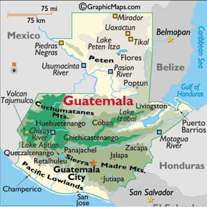
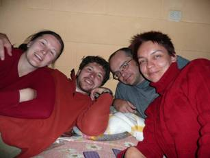
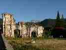

Guatemala Tour 2008
2008 · Guatemala
Guatemala Tour 2008
Chcete vidieť krajinu plnú farieb?
Chcete spoznať májsky národ v celej svojej kráse?
Máte chuť na fazule na rôzny spôsob, kukuričné placky a grilované mäso?
Chcete vidieť ozbrojených strážcov obchodov, bánk...?
A že ste sa ešte nevozili na pestrofarebných „chicken“ busoch po kľukatých cestách s občasnými závalmi?
Že chcete prekonať rekord v počte odvezených ľudí v mikrobuse?
(náš rekord zatiaľ je v 15 miestnom mikrobuse cestovalo 21 dospelých a 12 detí + príručné batožiny)
Máte zálusk na ozajstné dobrodružstvo?
Tak treba zažiť Guatemalu
Pripájame zopár obrázkov, ale aj tak pocity a prežité udalosti sa žiadnymi fotkami vykresliť nedajú.
Účastníci zájazdu: Lenka, Peťo, Cuco, Katka Lenka.


Antigua. Sem smerovali naše prvé kroky hneď po prílete a adrenalínovom prevoze z letiska. Mesto je zapísané medzi kultúrnymi pamiatkami UNESCO, plné ruín kostolov a zachovalej barokovej architektúry, leží na úpätí rovnomennej sopky. V okolí sa nachádzajú ďalšie sopky ako Agua, Fuego, Acatenango a Pacaya.



Antigua je miestom, kde sa dá túlať peknými uličkami, veľkým trhoviskom, alebo len tak odpočivať v parčíku v centre. Tu sme sa jeden deň neplánovane zdržali, lebo Peťovi ukradli pas, kreditky a nejaké peniaze, takže sme mali vybavovačky s miestnymi a na turistickej polícii. Ale určite len tak niekto nemôže povedať, že sa večer viezol na korbe policajného auta


Asi 30 km od Antiguy sa nachádza jedna z najaktívnejších sopiek Strednej Ameriky, Pacaya, 2552 m.n.m. Je to úžasný pocit prísť až na 1-2 metre k tečúcej láve a nechať sa ovaliť neznesiteľnou horúčavou. Niektorým sa pálili veru aj podrážky na topánkach
Aj keď výstupy na túto sopku sú masovou záležitosťou, určite stojí za to vidieť lávu na vlastné oči.


Z Antiguy sme si to namierili k Lago de Atitlán. Je to zrútený vrchol sopky, plný priezračnej vodys hĺbkou až 320 m. Pricestovali sme do mesta Panajachel, mesta Gringov (cudzincov) a odtiaľ loďou do mestečka San Pedro. Tu sa dá vidieť ako sa zbiera a suší káva. Zo San Pedra sme podnikli výlet na koňoch pozrieť si plantáže kavovníkov a avokád. Ďalší deň sme sa zúčastnili výstupu na horu Indiana Nose, kde domáci obetujú bohom.


Od jazera sme sa vybrali k ďalšej vode, tentokrát k termálnym prameňom Fuentes Georginas vo výške približne 2400 m.n.m. Prespali sme v meste Zunil v luxusnom hoteli, lebo toto mestečko že vraj iný hotel nemá. Ale stálo to za to, na každej izbe bola privátna sauna. Hneď ráno sme si stopli miestny povoz a hor sa na námestie, odkial odchádzali autá priamo do kúpeľov.


Dobre zrelaxovaní sme aj keď neradi opustili toto miesto a pokračovali v našej ceste do Quetzaltenanga (Xela). Pôvodne sme tu mali prestúpiť len na ďalší autobus, ale rozhodli sme sa, že tu ešte zostaneme a podnikneme výstup na Santa Maria 3770 m.n.m a pozrieme si erupciu sopky Santiagito. Neskutočný zážitok, už také niečo asi len tak neuvidíme. Domáci sa na tento kopec chodia modliť ku svojím svätým.


Zmordovaní po túre sme sa navečer prepravili do Huehuetenanga, kde sme iba prespali a odtiaľ mierili k indiánskemu trojúholníku – Nebaj, Cotzal, Chajul. Príroda je tu nádherná, miestny obyvatelia tu žijú postarom a vyrábajú nádherné tkaniny. Pre mňa to bolo najmagickejším miestom krajiny. Pešo od Nebaju sa nachádzajú vodopády, ktoré sme nazvali Basurové, pretože pritekajúca voda do nich bola plná odpadkov. (Basura = odpadky)


Veľavravné tváre Indiánov a ich nezabudnuteľné pohľady


Po pár dňoch strávených medzi krásnymi luďmi sme sa pohli smerom na Cobán. V Uspantáne náhle skončila asfaltka a išli sme po ceste, ktorú som nazvala širší horský chodník. V Cobáne sme iba prespali a ráno sa vydali na cestu do dažďového pralesa Semuc Champey.


Semuc Champey – miestnymi nazývaný aj ôsmy div sveta, predstavuje 300 metrov dlhý vápencový most, pod ktorým tečie mohutná rieka Río Cahabón. Kúsok od vstupu do Semuc Champey sa oplatí navštíviť jaskyňu, v ktorej sa výlučne pláva a ak nemáte čelovku, tak iba so sviečkou v ruke ☺. Na tomto božskom mieste Peťa a Katku postihli veľké črevné ťažkosti. Po návšteve v miestnej nemocnici sme sa rozhodli ešte počkať ďalší deň kým ťažkosti prejdú, aby sme mohli pokračovať v ďalších dobrodružstvách. Upozornenie: Európske lieky na ich „potvory“ nezaberajú.


Črevná choroba ako tak pominula a už sme si to pádili smerom na Laguna Lachua. Vôbec sme nevedeli, do čoho ideme, len to, že tam majú byť krododíly. Po najťažšej ceste akú sme zažili nás vyložili na začiatku prírodnej rezervácie. Kúpili sme nejaké základné potraviny a na miesto príchodu sme mali ešte hodinku pešo džunglou. Počasie nás troška sklamalo, pršalo, ale príroda bola aj tak nádherná.


Z džungle priamo do džungle ☺. Prišli sme do Flores, ktoré leží na jazere de Petén Itzá. Priamo je spojené s mestom Santa Elena, ktoré je veľmi neusporiadané, prašné a s veľkou cestnou premávkou. Ale hlavným dôvodom, prečo sme zavítali na toto miesto, sú asi hodinu a pol vzdialené pyramídy Tikal (najväčšie májske mesto v klasickom období, chránené UNESCOm). Sú umiestnené priamo v dažďovom pralese a sú ozaj majestátne


Z Tikalu sme sa zviezli priamo do Lívingstonu. V Rio Dulce sme nasadli na loď a po dvojhodinovej plavbe sme prišli k mólu Lívingstonu, kde už nás vítali čierni priatelia s úsmevom na perách. Je to kľudné mestečko, bez zhonu a veľkého ruchu. Asi 5 km od mesta sa nachádzajú Los Siete Altares, séria siedmych kaskách.


Z Lívingstonu sme išli priamo do hlavného mesta, vyzdvihnúť si nové doklady. Zvyšok voľného času sme strávili ešte v Antigue.


Aj takto sme cestovali


A takto sme vychutnávali dobroty na trhoch a stravovali sa s miestnymi


A ešte niečo navyše


Fotili Cuco a Peťo, zapísala Lenka
Pôvodná stránka: archív horecsport.sk